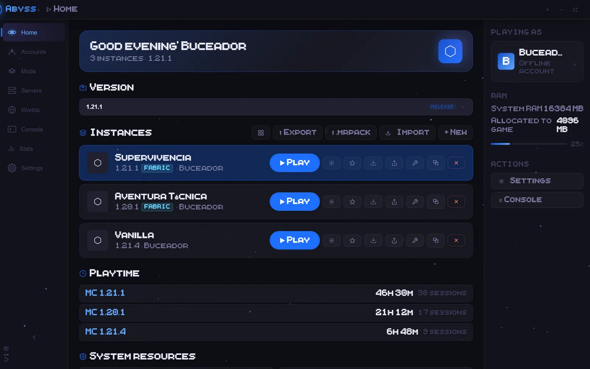
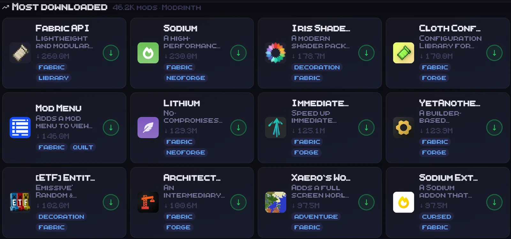
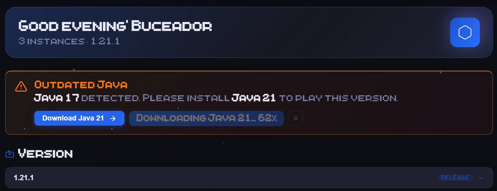
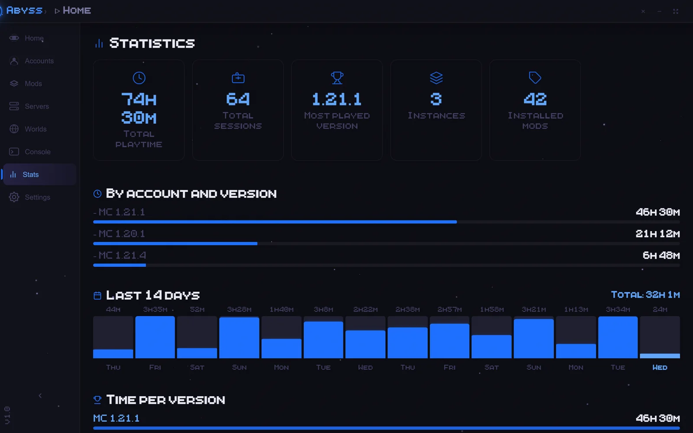
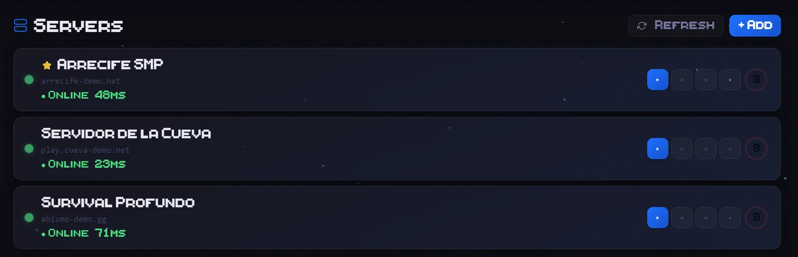
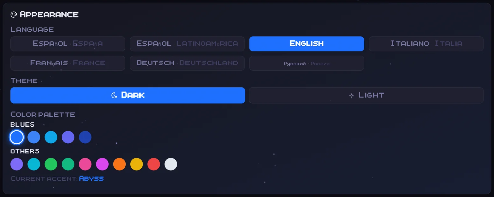
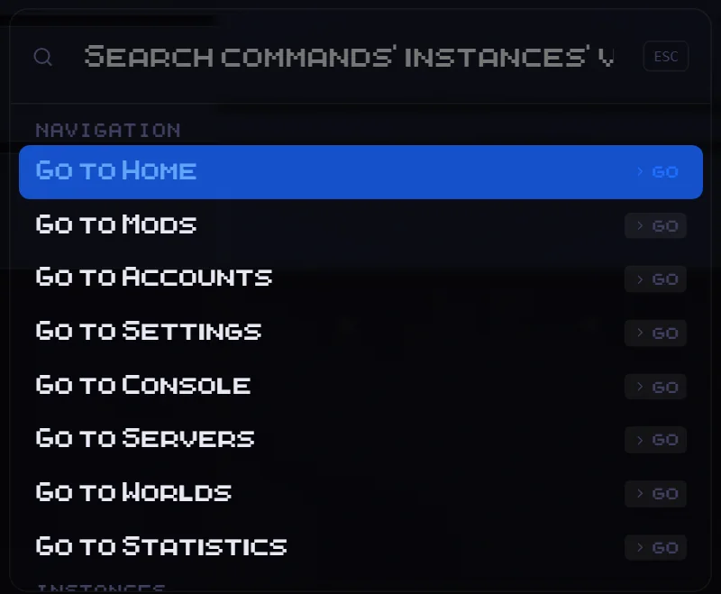

Pick a version. Add mods. Press play.
Abyss is a free Minecraft: Java Edition launcher for Windows. It handles versions, Fabric, Modrinth mods and even Java for you.
Play any version
Releases, snapshots, betasEvery release Mojang has shipped, plus snapshots and betas when you want them. Keep separate instances for survival, modded and vanilla, each with its own version, RAM and notes.
- Vanilla and Fabric instances
- Clone, pin and export instances
- Microsoft login or offline profiles
- Your worlds are backed up before each launch
Install mods from Modrinth
Shaders and resource packsSearch all of Modrinth without leaving the launcher. Abyss warns you when a file doesn’t fit your game version, lists the dependencies a mod needs and tells you when updates are out.
- Shaders and resource packs too
- Update your mods in one click
- Turn mods off without deleting them
- Drag and drop your own .jar files

Let Abyss set up Java
One clickMinecraft 1.20.5 and newer needs Java 21. Versions 1.18 to 1.20.4 need Java 17. Abyss checks the Java you have, installs the right one with one click and picks it when you launch.
- Spots the wrong Java before you play
- Installs Temurin (Adoptium) for you
- Chooses a compatible Java at launch

See your playtime
Last 14 daysTotal hours, sessions, your most-played version and a chart of the last 14 days. Abyss keeps count while you play.

Join your servers
Live pingSave the servers you play on, watch their ping refresh every 30 seconds and join from the list. The game opens already connected.
- Favorites and one-click IP copy
- Manage and back up your worlds

Make it yours
15 accent colorsDark or light, 15 accent colors and themes you make yourself. Try them here: this page changes color with you.
Current accent: Abyss

Do it all from Ctrl+K
No mouse neededJump to any screen, find an instance, switch versions or change the theme without reaching for the mouse. This page works the same way: press Ctrl+K.

Before you download
Requirements- Windows 10 or 11, 64-bit. There’s no macOS or Linux version yet.
- The launcher comes in 7 languages. It asks which one you want the first time you open it.
- Instances run Vanilla or Fabric. Forge isn’t supported yet.
- The installer isn’t signed yet, so Windows SmartScreen may warn you. Click “More info”, then “Run anyway”.
- To play online you need a Minecraft: Java Edition account.